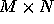

| SameGame Simulation |
The one-player game of SameGame is played on an M row by N column rectangular grid. In each cell of the grid is placed a positive integer in the range 0 through 9. The goal of the game is to remove all the integers from the grid. The player attempts this by repeatedly selecting a cell for removal. Each time a cell is selected for removal, all the cells in the connected region (defined below) containing the same integer found in selected cell are removed, and all cells above those that were removed ``drop down" (toward the bottom of the grid). When all the cells in a column have been removed, then columns to the right of the removed column slide to the left. The game is over when all cells are removed (a win), or when no more cells can be removed.
A connected region consists of all cells that can be reached by moving horizontally (left or right) and/or vertically (up or down) from any cell in the region, subject to the restriction that all cells in the connected region must contain the same value.
Cells will be numbered starting with the lower left corner of the grid; this is cell (1,1). The cell above it is cell (2,1), and the cell to its right is cell (1,2).
The cells at (1,1), (2,5), (3,1), (3,2) and (3,3) may not be successfully selected for removal, since they aren’'t parts of connected regions (i.e., regions that contain at least two connected cells with the same value). The cell at (2,1) is part of the connected region also containing the cells at (2,2) and (1,2). Likewise, the connected region containing the cell at (1,5) also contains the cells at (1,4) and (2,4), but not the cell at (3,3). Starting with the original grid shown above, the following selections will result in a win:
1 3 5 2 2 3 5 1 1 2 3 5 5
5 1 3 5 1 1 3 3 5 5
1 5 1 1 5 5 5
1 1 1
Finally, in step 5, selecting cell (1,1), (1,2) or (2,1) will remove the remaining integers from the grid.
In the input for this problem your program will be presented with a sequence of grids, each having no more than 10 rows and 40 columns. For each grid there will also be given a sequence of cell removal selections. Apply these selections, in order, to each grid, ignoring those that are not permitted (e.g. they select non-existant cells, or they select regions with fewer than two cells). Then display the resulting grid or, if appropriate, the message "Game Won".
The input will consist entirely of non-negative integers without regard to line structure. Each grid and sequence of removal selections will begin with values for M and N. If either of these values is zero, then the input is terminated.
Following M and N will appear the  integers for the grid, in row major order. That is, the values are given in order for cells (1,1), (1,2), ..., (1,N), (2,1), ..., (M,N). Following the grid data will appear pairs of integers, each pair indicating the row and column of a grid cell selected for removal. The end of this sequence will be marked by a pair of zeroes.
If a game is won, your program must skip any remaining pairs of integers (if any) through and including the pair of zeroes to reach the data for the next grid in the input.
As noted above, the output for each grid in the input data should be either the grid that remains after considering all selections, or the message "Game Won". Precede the output for each grid by its sequence in the input; the first grid is numbered 1.
Look at the samples below for the exact format.
3 5 1 2 3 5 5 2 2 3 5 1 1 3 5 2 2 3 5 2 2 1 2 1 2 1 1 0 0 3 5 1 2 3 5 5 2 2 3 5 1 1 3 5 2 2 2 2 1 2 1 4 1 2 99 99 0 0 4 3 1 4 4 4 4 2 1 2 3 3 1 3 1 2 1 1 1 3 1 1 0 0 0 0
Grid 1.
Game Won
Grid 2.
1 2
1 2 1
Grid 3.
Game Won